Curated vector SVG examples for publication-style biological figures. Every file shown here is a retained asset; unused preview images are intentionally excluded.
Palette Reference
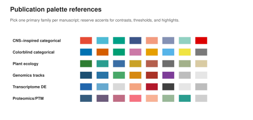
Palette reference. Compact color families for categorical biology, plant ecology, genomics tracks, transcriptomics, and proteomics.
Theme Systems
Each card uses the same four-panel scientific figure structure so the visual differences come from the theme, not from changing the figure type.
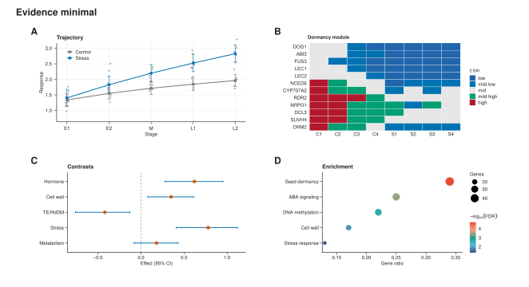
Evidence minimal. Restrained colors, compact typography, raw points, uncertainty, heatmap, model contrast, and enrichment panel.
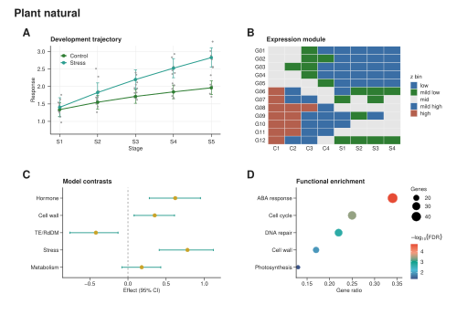
Plant natural. Green and earth-tone accents for plant, ecological, and developmental biology narratives.
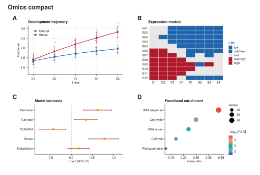
Omics compact. Diverging red-blue logic for expression matrices, differential signals, and compact multi-panel omics figures.
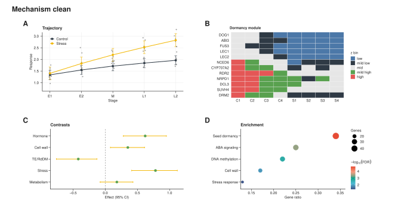
Mechanism clean. Structured palette for mechanism diagrams and evidence-level biological models.
Integrated Biological Figures
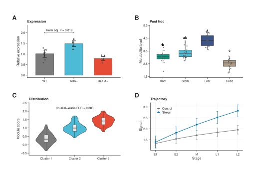
Quantitative panels. Bar, box, violin, and trajectory panels with raw data, intervals, and statistical marks.
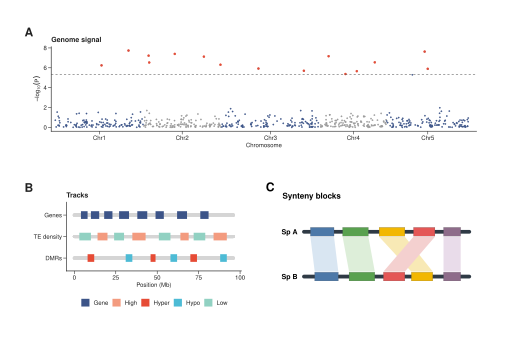
Genomics panels. Manhattan signal, genome tracks, and synteny blocks in a coherent double-column layout.
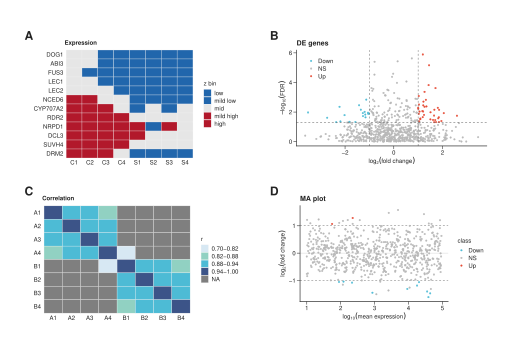
Transcriptomics panels. Expression heatmap, volcano plot, sample correlation, and MA-style signal view.
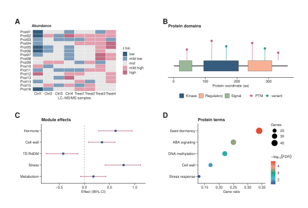
Proteomics panels. Protein abundance, domain lollipop, effect estimate, and functional enrichment views.
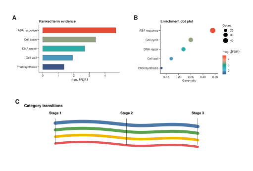
Functional panels. Ranked terms, enrichment dot plot, and category-transition schematic.
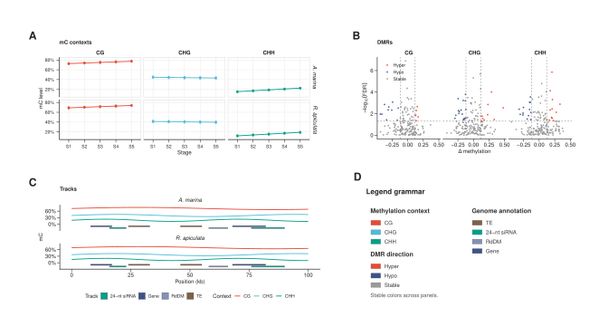
Faceted epigenomics. Multi-species and CG/CHG/CHH comparisons with DMR volcano panels, genome tracks, and an explicit epigenetic legend.
Quality Comparison
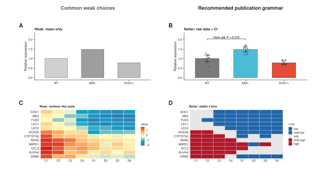
Quality comparison. Side-by-side examples showing why raw observations, intervals, controlled scales, and stable color grammar usually read better than mean-only bars or rainbow-like heatmaps.
Panel Assembly
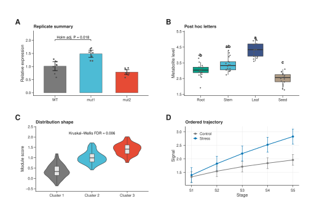
Balanced assembly. Four matched panels in a publication-style 2x2 layout with external A/B/C/D labels.